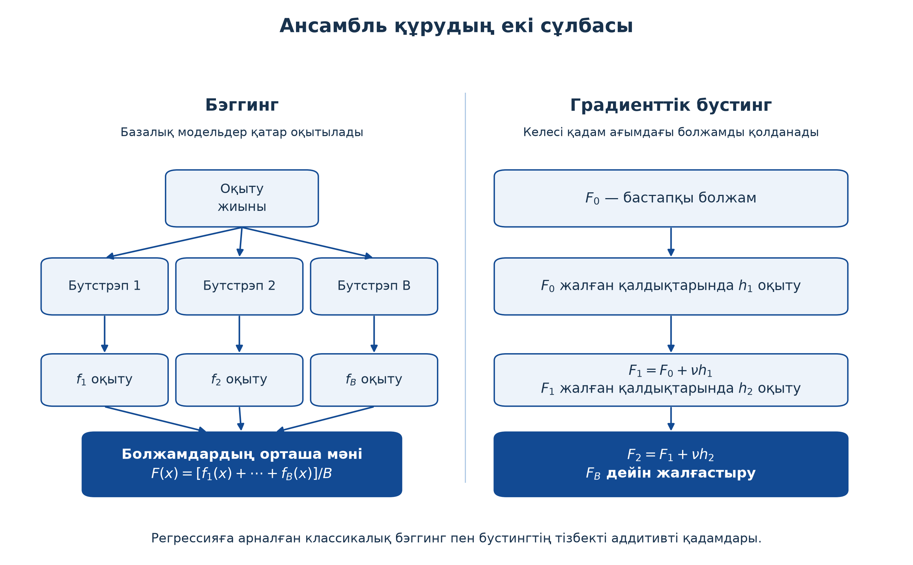
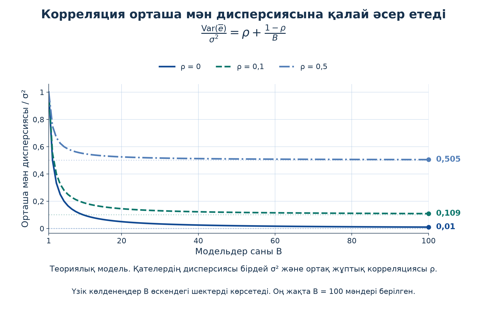
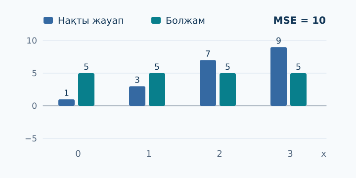
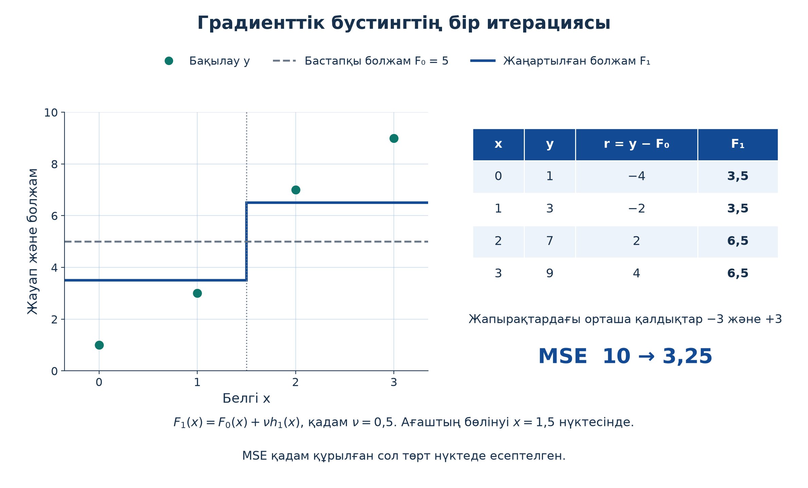
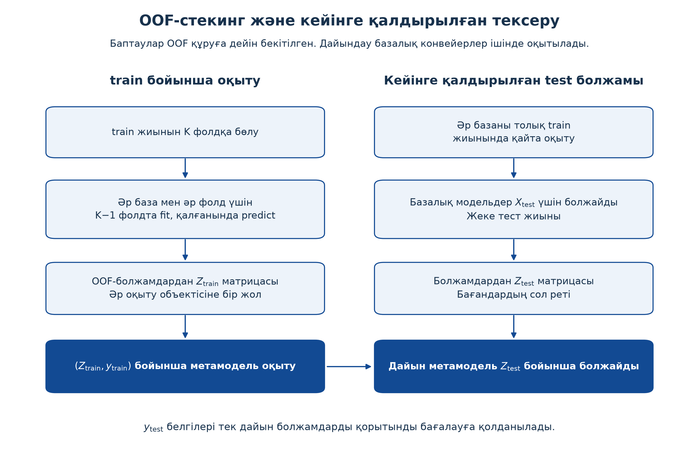
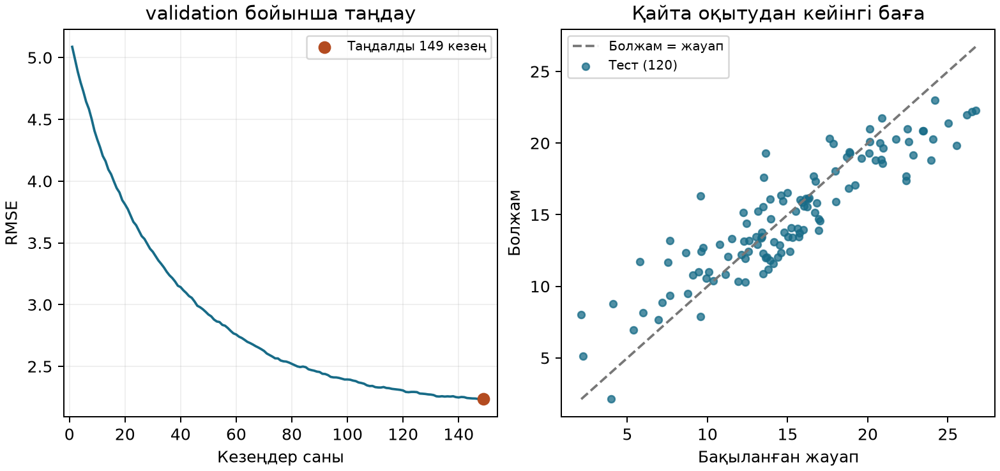
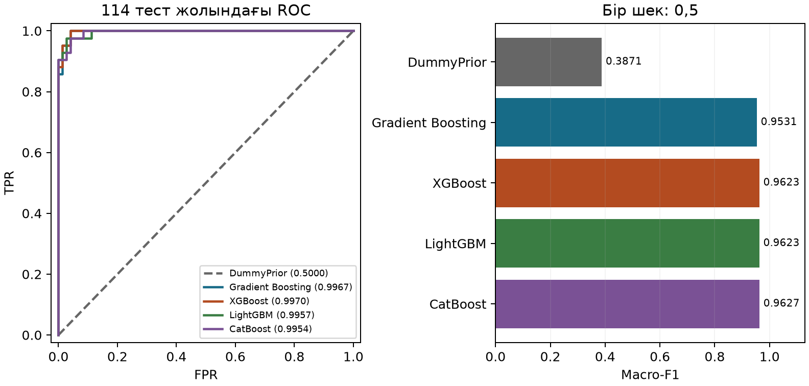

9-тарау. Ансамбльдік әдістер және градиенттік бустинг
9.1 Тақырып бағдаршысы
Модель келесі ауысымдағы энергия шығынын бағалайды деп елестетейік. Бір ағаш жабдықтың жұмыс режимдерін жақсы ажыратса, екіншісі температураның ауытқуына күштірек әсер етеді. Ағаштарды әртүрлі ішкі жиындарда оқытсақ, орташалау кезінде олардың қателері бірін-бірі ішінара өтей алады. Ағаштарды тізбектей құрсақ, әрбір жаңа ағаш ағымдағы болжам жүйелі түрде қателесетін жерге түзету енгізе алады. Екі тәсіл де ансамбль (ensemble) құрады, бірақ модельдер арасындағы жұмысты әртүрлі ережелермен бөледі.
Тараудың мақсаты — бэггингті (bagging), бустингті (boosting) және стекингті (stacking) ажыратуды, кезекті базалық алгоритмнің үлесін есептеуді және ансамбльдерді қайталанатын хаттама бойынша салыстыруды үйрену. Тарауды меңгергеннен кейін студент bootstrap пен кездейсоқ орманның (random forest) жұмысын түсіндіріп, ішкі жиынға кірмеген объектілердегі бағалауды түсіндірмелеп, градиенттік бустингтің бір қадамын орындап, Gradient Boosting, XGBoost, LightGBM және CatBoost баптауларын салыстырып, деректердің ағып кетуінсіз стекинг сұлбасын құра алады. Зертханалық жұмыста итерациялар саны алдымен регрессия есебіндегі валидациялық жиын бойынша таңдалады. Екінші тәжірибеде алдын ала берілген төрт конфигурация жіктеу деректерінің бір бөлінуінде салыстырылады.
Алғышарттар — 4-тараудағы ағаштар мен Random Forest, 5-тараудағы шығын функциялары мен бағалау ережелері, 6-тараудағы шамадан тыс үйрену және 7-тараудағы гиперпараметрлерді іздеу. Бустинг қадамын қорытып шығару үшін шығынның ағымдағы болжам бойынша туындысы қажет. Бэггингті түсіндіруде дисперсия мен ковариация қолданылады. Негізгі ұғымдар — базалық модель, bootstrap, OOB, қателер корреляциясы, жалған қалдық (pseudo-residual), оқыту қарқыны (learning rate), ағаш өлшемін шектеу, OOF-болжам және метамодель (meta-model).
9.2 Орташалау, дауыс беру және бэггинг
9.2.1 Нақты нені біріктіреді
Ансамбль бір есепке бірнеше базалық модельді қолданады. Олардың сандық болжамдарын, ықтималдық бағаларын немесе класс туралы шешімдерін біріктіруге болады. Амалды таңдау әрбір модельдің не қайтаратынына және нәтиженің қалай бағаланатынына тәуелді. Регрессия үшін көбіне орташа мән алынады. B модель бірдей өлшем бірліктерімен болжамдарын қайтарсын. Онда ансамбль болжамы
Егер үш модельдің болжамдары 9, 11 және 14 болса, орташа мән 34/3≈11,33 болады. Салмақталған орташа модельге үлкенірек салмақты алдын ала бекітуге немесе салмақтарды деректер бойынша бағалауға мүмкіндік береді. Салмақтарды бағалау үшін валидациялық жиын немесе фолдтан тыс болжамдар қажет. Әйтпесе train жиынында күшті бір модель шамадан тыс үйрену салдарынан үлкен салмақ алуы мүмкін. Физикалық бірліктердегі болжамдарды орташалау да бірізділікті қажет етеді: Цельсий және Фаренгейт градустарындағы температураларды түрлендірмей қосуға болмайды.
Бинарлық жіктеуде қатаң дауыс беру (hard voting) әрбір модельдің соңғы белгісін ескереді. Оң класс ықтималдықтары 0,51, 0,52 және 0,05, ал шек 0,5 болғанда үш дауыстың екеуі 1 класын қолдайды. Жұмсақ дауыс беру (soft voting) ықтималдықтарды орташалайды. Бұл мысалда орташа ықтималдық 0,36 болып, сол шек бойынша шешім 0 класына сәйкес келеді. Айырмашылық жұмсақ ереженің сенімділік шамасын ескеруінен туындайды. Салыстырмалылық үшін калибрлеуді және predict_proba ішіндегі класс ретінің бірдей болуын тексеру керек. Егер модель тек белгі қайтарса, 0 немесе 1 мәні өздігінен калибрленген ықтималдыққа айналмайды.
9.2.2 Бэггинг және қателер корреляциясы
Бэггинг, яғни bootstrap aggregating, базалық модельдерді оқыту объектілерінің bootstrap-жиындарында құрып, кейін олардың болжамдарын біріктіреді. Әрбір bootstrap-жиын қайтарымды кездейсоқ іріктеумен алынады. Бастапқы жол оған бірнеше рет енуі немесе мүлде енбеуі мүмкін. Деректер, баптаулар және кездейсоқ тізбектер бекітілгеннен кейін жекелеген модельдерді қатар оқытуға болады. Градиенттік бустингте кезекті модель ағымдағы ансамбльге сүйеніп құрылады. 9.1-сурет бұл айырмашылықтың оқыту ретін қалай өзгертетінін көрсетеді.

Дереккөз: регрессияға арналған классикалық бэггинг пен градиенттік бустингтің авторлық сұлбасы.
Бэггинг оқыту жиынындағы шағын өзгерістер кезінде болжамдары едәуір өзгеретін модельдер үшін әсіресе пайдалы. Бірнеше бақылауды ауыстырғаннан кейін ағаш жоғарғы түйінді басқаша бөлуі мүмкін. Орташалау кезінде осындай көптеген қайта құрылулар тегістеледі. Пайдасы жекелеген модельдердің қателері қаншалықты сәйкес келетініне тәуелді. Егер барлық болжамдар бірдей өзгерсе, орташа мән ортақ құраушыны қайталайды.
Бекітілген x нүктесіндегі оңайлатылған модельді қарастырайық. Ансамбльді қайта құру кезінде қарастырылатын қателерінің дисперсиясы бірдей σ², ал ортақ жұптық корреляциясы ρ болсын. Орташа мәннің дисперсиясына B дисперсия және B(B−1) жұптық ковариация кіреді. σ²>0 болғанда
9.1-есептеу мысалы. Модельдер саны мен қателер ұқсастығы нені өзгертеді.
B=10 және ρ=0 болғанда дисперсиялар қатынасы 0,1 болады. B=10 және ρ=0,5 болғанда 0,5+0,5/10=0,55 аламыз. Сол корреляцияда ансамбльді B=100-ге дейін арттырсақ, қатынас 0,505 болады. Модельдер саны он есе өсті, ал нормаланған дисперсия небәрі 0,045-ке азайды. Бұл модельде қателердің ортақ құраушысы шектеуші факторға айналады. 9.2-суреттегі қисықтар деректерден бағаланбайтын берілген корреляцияға сәйкес келеді. Формула тек дисперсияны сипаттайды. Егер барлық модельдер болжамды жүйелі түрде асырып бағаласа, мұндай ығысу орташалаудан кейін де сақталады.

Дереккөз: қателер дисперсиясы бірдей теориялық модельдегі дәл есептеу. B мәндері 1-ден 100-ге дейін.
Нақты ансамбльде қателер нүктеге тәуелді, ал олардың дисперсиялары мен корреляциялары әртүрлі болуы мүмкін. Әртүрлілікті тексеру үшін түрлі модельдердің болжамдарын бір валидациялық жиында салыстырып, олардың қай жерде алшақтайтынын қарастыруға болады. Қателер ұқсастығын азайту жекелеген модельдердің сапасын бақылаумен бірге мағыналы. Әдейі әлсіз болжамды қосу, тіпті оның қалғандармен корреляциясы төмен болса да, орташа нәтижені нашарлатуы мүмкін.
9.2.3 Жолдарды іріктеу және ағаш ансамбльдері
Ансамбль стратегияларын екі сұрақ бойынша салыстыру ыңғайлы. Әрбір базалық алгоритм қандай деректерді немесе аралық жауаптарды пайдаланады? Келесі қадамға нақты не беріледі? Бэггингте базалық модельдер әртүрлі ішкі жиындарды алады. Бустингте келесі модель ағымдағы ансамбльдің қатесіне немесе шығын туындысына тәуелді. Стекингте базалық модельдердің болжамдары тағы бір модельдің кіріс белгілеріне айналады. 9.1-кестеде тән айырмашылықтар мен тексеру шарттары берілген.
9.1-кесте. Ансамбльдің құрылысы және нәтижені тексеру
| Тәсіл | Базалық модельдер қалай оқытылады | Жауаптар қалай біріктіріледі | Нені тексеру маңызды |
|---|---|---|---|
| Дауыс беру | Алдын ала таңдалған алгоритмдер мен баптаулар бойынша | Белгілер немесе ықтималдықтар бойынша | Класс ретін, калибрлеуді және шек ережесін |
| Бэггинг | Бекітілген баптаулармен bootstrap-жиындарда | Орташалау немесе дауыс беру арқылы | Базалық болжамдардың өзгермелілігін, ансамбль құнын |
| Кездейсоқ орман | Жолдар мен үміткер белгілерді кездейсоқтандыратын ағаштар | Ағаш жауаптарын біріктіру арқылы | Белгілер санын, ағаш өлшемін, OOB пен сыртқы test жиынын |
| Градиенттік бустинг | Шығынды азайту бағыты бойынша тізбектей | Салмақталған түзетулер қосындысымен | Оқыту қарқынын, қадамдар санын, ағаштар күрделілігін |
| Стекинг | Оқытудан тыс болжамдар алу үшін фолдтарда | Базалық модель болжамдарындағы метамодельмен | Фолдтардың оқшаулануын және жабық test жиынын |
9.3 Кездейсоқ орман және bootstrap-жиыннан тыс бағалау
9.3.1 Әртүрліліктің екі көзі
Кездейсоқ орман бірнеше ағаш құрып, олардың жауаптарын біріктіреді. bootstrap қосылғанда әрбір ағаш қайтарымды жолдардан құралған өз жиынында оқытылады. Егер max_features деректердегі белгілер санынан аз белгіні берсе, бөлінуді іздеу осы түйінге арналған үміткерлердің кездейсоқ жиынынан басталады. Ең күшті белгілер барлық оқыту объектілері үшін бірдей болса да, екі ағаш әртүрлі бөлінулерді таңдауы мүмкін. scikit-learn кітапханасында әдепкіде жіктеуіште max_features="sqrt", регрессорда max_features=1.0 қойылған, соңғысы барлық белгілерге сәйкес келеді.
max_features шамасын азайту әртүрлілікті арттыруы мүмкін, бірақ кейде жекелеген ағаштың маңызды түйінінде пайдалы белгі жетіспейді. min_samples_leaf және max_depth егжей-тегжейлілікті реттейді. n_estimators шамасын арттыру әдетте орташа нәтижені кездейсоқ тізбектерді таңдауға орнықтырақ етеді және оқыту, сақтау мен болжау құнын өсіреді. Ағаштар саны мен әрбір ағаштың өлшемі әртүрлі қасиеттерге жауап береді. Оларды бекітіп, бір хаттама бойынша салыстыру керек. scikit-learn кітапханасының RandomForestClassifier класында ықтималдықтар ағаштар бойынша орташаланады, ал класс болжамы ең үлкен орташа ықтималдық бойынша таңдалады.
Кездейсоқ ағаштар ансамблінде алгоритм баптаулары мен орындау режимін бөлек тіркеу пайдалы. Мысалы, random_state бірдей жағдайларда кездейсоқ жиындар мен бөлінулердің қайталанғыштығын анықтайды. n_jobs қатар орындалуды басқарады. Ағындар мен құрылғыны бекітпей, кітапханалар арасындағы уақытты салыстыру әдіс пен орта қасиеттерін араластырады. Уақыт нәтижелерін бірдей сценарийде, бірнеше қайталаумен өлшеу керек. Сапаны бағалаудың мағынасы салыстырудың қандай есепті шешетініне де тәуелді. Шағын оқу жиынында бір орманның тиімді нәтиже көрсетуі оның тұқымдасының жаңа есептердегі артықшылығын дәлелдемейді.
9.3.2 Ағаш қанша әртүрлі жолды көреді
Бастапқы оқыту жиынында n жол болсын және біз n рет тең ықтималдықпен қайтарымды түрде бір жол таңдайық. Бір әрекетте нақты жолды таңдамау ықтималдығы 1−1/n болады. Әрекеттер тәуелсіз болғандықтан, оны n дәрежеге шығарамыз. Таңдалған әртүрлі индекстер жиынын S, оның өлшемін U деп белгілейік. Математикалық күтімнің сызықтылығынан
Үлкен n кезінде алынбай қалған жолдар үлесі e⁻¹≈0,368-ге, ал таңдалған әртүрлі жолдардың күтілетін үлесі 0,632-ге ұмтылады. Бұл — көрсетілген сұлбадағы күтілетін үлес. n=4 үшін бір жолдың алынбай қалу ықтималдығы (3/4)⁴=81/256≈0,3164 болады. Әртүрлі жолдардың күтілетін саны 4(1−81/256)=175/64≈2,7344 болады. Әрбір нақты жиында әртүрлі жолдардың саны бүтін болғанымен, бөлшек күтім көптеген ықтимал жиындар бойынша орташа мәнді сипаттайды. Ішкі жиынның басқа өлшемі немесе тең ықтималдықсыз іріктеу есептеуді өзгертеді.
9.3.3 OOB нені өлшейді
Әрбір оқыту жолы үшін bootstrap-жиындарында сол жол болмаған ағаштардың ғана жауаптарын жинауға болады. Бұл — жиыннан тыс болжам (out-of-bag, OOB). Екі жол үшін мұндай ағаштар жиындары әдетте әртүрлі. Ағаштар саны аз болғанда кейбір жолдар үшін бірде-бір OOB-жауап болмауы мүмкін. Қамтуды және бір жолға келетін жауаптар санын estimators_samples_ индекстері бойынша есептеуге болады. scikit-learn кітапханасында OOB bootstrap=True болғанда қосылады. Жіктеуде oob_score_ әдепкіде дұрыс жіктеу үлесін (accuracy) пайдаланады. Тексерілген 1.9.1 нұсқасында OOB-жауабы жоқ жолдар туралы ескерту беріледі. Мұндай жол үшін oob_decision_function_ ішіндегі нөлдік вектор ықтималдықтар үлестірімін білдірмейді, тіпті іске асыру көрсеткішті есептегенде оған argmax бойынша класс тағайындаса да. Сондықтан балды түсіндірмелеуден бұрын қамтуды тексереді. Теңгерімсіз деректерде accuracy мағынасы кластар жиілігіне және қателер бағасына тәуелді.
9.2-есептеу мысалы. Тек ішкі жиыннан тыс ағаштар бойынша орташалау.
Төрт ағаш бір объект үшін оң класс ықтималдықтарын 0,82, 0,30, 0,71 және 0,40 деп берсін. Объект бірінші және үшінші ағаштардың bootstrap-жиындарына енген. OOB-болжам екінші және төртінші ағаштарды пайдаланып, (0,30+0,40)/2=0,35 болады. Осы жол үшін толық орман ықтималдығы (0,82+0,30+0,71+0,40)/4=0,5575 болар еді. 0,5 шегінде айырмашылық маңызды. Жаңа объектілер үшін оқытылған орман барлық ағаштарды пайдаланады, ал OOB оқыту жолдарындағы болжамды арнайы шектеумен бағалайды.
Белгілерді дайындауда әрбір объектінің рөлін бүкіл тізбек бойынша қарастыру қажет. Егер орманды оқытудан бұрын белгілер барлық оқыту жауаптарын пайдаланып іріктелсе, жолды нақты ағаштың bootstrap-жиынынан шығару оның алдын ала іріктеуге әсерін жоймайды. Баптауды OOB бойынша таңдағанда алынған көрсеткіш іріктеудің бір бөлігіне айналады. Бұл жағдайда тәуелсіз бағалау үшін бөлек test бөлігін сақтайды немесе тексерудің сыртқы контурын қолданады. Градиенттік бустингте кезекті ағаш барлық құрылған қадамдардан ақпарат алады.
9.4 Градиенттік бустинг және AdaBoost
9.4.1 Аддитивті модель және бастапқы болжам
Градиенттік бустинг болжамды қадамдап құрады. Алдымен барлық объектілер үшін бірдей қарапайым модель беріледі. Кейін оның шығысына оқыту жиыны бойынша бағаланған функциялар қосылады. Әрбір жаңа функция ағымдағы жиынтық болжамды және таңдалған шығынды ескереді. Аддитивті модель (additive model) алынады. Мысалы, регрессияда бірінші ағаш белгі мәндері кіші объектілердің болжамын түзете алады, ал келесісі басқа белгі ажырататын осы объектілер бөлігінде оны нақтылай алады.
арқылы
кезеңнен кейінгі шығысты,
арқылы жауабы
және сандық шығысы
болатын бір бақылаудағы шығынды белгілейік. Базалық қойылымда салмақтары бірдей
объектіден тұратын жиынды қарастырайық. Бастапқы
тұрақтысы оқыту жауаптары бойынша таңдалады. Ол тұрақты болжамдар арасындағы жиынтық шығынды минимумдайды.
Шығын функциясын таңдау бастапқы болжам мен кейінгі түзетулердің мағынасын анықтайды. Квадраттық қате үшін оңтайлы тұрақты — жауаптардың орташа мәні. Әрі қарай қолданылатын параметрлеудегі бинарлық логистикалық шығын үшін тұрақты екі класс жиіліктері қатынасының логарифмін білдіреді. Оқытуда бағаланған тұрақты кейін барлық жаңа объектілерді болжауда қолданылады. Функцияны кезеңдер арқылы тізбектей жуықтау әдісі және оны әртүрлі шығындарға қолдану Фридман еңбегінде берілген. Friedman, 2001.
Модель кезеңдері бір тізбек құрайды. қадамында келесі түзету құрылып жатқанда, құрамына енген функциялар бекітілген күйде қалады. Мұндай рет барлық қосылғышты бірден іздеуді қарапайымырақ есептер қатарына ауыстыруға мүмкіндік береді. Базалық болжауыш құрылымы рұқсат етілетін түзетулерді анықтайды. Тереңдігі аз ағашта әрбір түзету белгілер кеңістігінің бірнеше аймағында тұрақты, ал әртүрлі ағаштар қосындысы едәуір көп аймақты ажырата алады.
жазылуындағы индекс тізбектей оқытылған модель кезеңдерінің санын білдіреді. Бір функция белгілі аймақта оң мән қосса, келесісі оның бір бөлігінде теріс мән қоса алады. Соңғы шығыс екі үлеске де тәуелді. Жаңа объект үшін есептеу оқыту кезінде алынған сол бөлінулер мен жапырақ мәндерін қолданады. Дербес қосындыны есептеу үшін белгілер жеткілікті. Жауаптар шығынды бағалауда, кезекті түзетуді оқытуда және рұқсат етілген деректер бойынша конфигурация таңдауда қажет.
9.4.2 Жалған қалдықтар және қадам шамасы
Шығыс бойынша дифференциалданатын шығын үшін ағымдағы шығыстың шағын өзгерісі нақты объектінің шығынына қалай әсер ететінін білуге болады. Ол үшін сандық аргументі бойынша туындыны есептеп, таңбасын өзгертеді. Алынған мәндер жалған қалдықтар деп аталады. Мұндағы индексі объект нөмірін, индексі алдағы кезең нөмірін білдіреді.
Оң мән осы бақылау үшін шығысты арттыруды, теріс мән азайтуды ұсынады. Бұл нұсқау ағымдағы шығыстың жергілікті өзгерісіне қатысты. Мысалы, қатесі үлкен объект бір шығын функциясында үлкен, екіншісінде бірқалыптырақ түзету алуы мүмкін. Келесі кезеңде туынды қайта есептеледі, өйткені алдыңғы жаңартудан кейін ол бағаланатын мән өзгерді.
жалған қалдықтан тұратын вектор белгілі объектілер үшін бағыттарды көрсетеді. Жаңа жолды болжау үшін белгілер функциясы қажет. Сондықтан
оқыту жұптары бойынша базалық регрессиялық модель, көбіне ағаш құрылады. Ол теріс градиентті қолжетімді бөлінулер жиынымен жуықтайды. Бірнеше объект бір жапыраққа түссе, жеке жалған қалдықтары әртүрлі болуы мүмкін болса да, олардың түзетуі ортақ болады. Жапырақ өлшемі мен ағаш тереңдігі мұндай жуықтаудың егжей-тегжейлілігін шектейді.
Егер белгілі бір жапырақтағы жалған қалдықтардың таңбалары қарама-қарсы, модульдері бірдей болса, олардың орташа мәні нөл болуы мүмкін. Белгілер объектілерді ажыратуға мүмкіндік берсе, толығырақ бөліну осы әртүрлі бағыттағы талаптарды сипаттай алады. Мұндай бөлінуде бақылаулар саны аз болғанда тексеруге қойылатын талаптар артады. Оқытуда жеке жалған қалдықтармен дәл сәйкес келген түзету жауаптардың кездейсоқ ауытқуларын да көрсетуі мүмкін. Жапырақтарға қойылған шектеулер әрбір жуықтау есебіне әсер ететіндіктен, олар құрылған функциялардың бүкіл тізбегін өзгертеді.
Теріс градиент мағынасын бағытталған туынды бойынша тексеруге болады. Белгілі бір функциясы бойымен қадам үшін жиынтық шығынның қадам масштабы бойынша нөлдегі туындысы оқыту жолдарындағы жалған қалдықтар мен мәндері көбейтінділері қосындысының теріс мәніне тең. Егер осы көбейтінділер қосындысы оң болса, жеткілікті кіші оң қадам жиынтық шығынды азайтады. Бұл — жергілікті тұжырым. Ақырлы қадамда туындының бағыт бойымен қалай өзгеретіні маңызды. Осыдан бағытты жуықтау мен қабылданған шығын функциясы бойынша түзету шамасын таңдаудың екі бөлек әрекет екені шығады.
Бағыт құрылғаннан кейін жаңартудың сандық шамасы таңдалады. Жалпы сұлбада алынған функция бойындағы бір көбейткішті бастапқы шығын бойынша таңдауға болады. Ағаш бустингінде табылған шекараларды сақтай отырып, түзету мәндерін жапырақтарда жеке нақтылауға болады. Бірқатар шығын үшін жапырақ мәндерінің жуық жаңартылуы қолданылады. Таңдалған көбейткішті немесе жапырақ мәндерін қоса алғанда, бір кезеңнің қорытынды функциясын деп белгілейік. коэффициенті болғанда кезең үлесін азайтады. Бұл тәсіл үлесті кішірейту (shrinkage) деп аталады.
Рекурсия қосындысын береді. болғанда есептелген толық түзету қолданылады. кішірек болса, келесі қадам басқа жалған қалдықтарды көріп, басқа шекараларды таңдауы мүмкін. Сондықтан оқытылып қойған ансамбльдің барлық үлесін бір санға көбейту тек осы масштабтауды ғана береді, ал жаңа мәнімен оқыту тізбегін қайта құру қажет. Қадам шамасын, кезеңдер санын және базалық ағаш күрделілігін бірге қарастырады. Фридман еңбегінің 5-бөлімі.
9.4.3 Квадраттық шығын және қолмен орындалатын қадам
Градиенттік бустингтің бір қадамы
Төрт бақылауда бір бөлінулі ағаштың ағымдағы болжамға түзету қосуын қарастырыңыз. Қате оқыту нүктелерінде есептеледі.

Нақты жауаптар 1, 3, 7 және 9. Бастапқы модель әр бақылау үшін олардың орташа мәнін, яғни 5-ті, болжайды. Бастапқы MSE=10.
Барлық қадамның мәтіні
- Бастапқы болжам — Нақты жауаптар 1, 3, 7 және 9. Бастапқы модель әр бақылау үшін олардың орташа мәнін, яғни 5-ті, болжайды. Бастапқы MSE=10.
- Қалдықтарды есептеу — Әр қалдық нақты жауаптан ағымдағы болжамды шегеру арқылы табылады. Қалдықтар ретімен −4, −2, 2 және 4-ке тең.
- Қалдықтарды ағашпен жуықтау — Ағаш x=1,5 шегінде екіге бөлінеді. Сол жапырақтағы орташа қалдық −3, оң жапырақта 3.
- Болжамды жаңарту — Қадам коэффициенті ν=0,5 болғанда болжамдарға −1,5 немесе 1,5 қосылады. Алғашқы екі болжам 3,5-ке, соңғы екеуі 6,5-ке тең. Оқыту MSE-і 3,25-ке төмендейді.
Квадраттық шығын үшін қате квадратының жартысын алған ыңғайлы. Туынды алғанда көбейткіш қысқарады. Осы жазылуда жалған қалдық бақыланған жауап пен ағымдағы болжам айырмасына тең.
Орташа мәнмен инициализациялау шығындар қосындысының тұрақты бойынша туындысынан шығады. Минимум нүктесінде тұрақтыдан ауытқулар қосындысы нөлге тең. Бекітілген жапырақ үшін дәл осы есептеу қалдықтардың орташа мәнін толық қадамдағы осы жапырақ шығыстарына оңтайлы ортақ түзету ретінде береді. (9.7) оқыту шығыны мен MSE метрикасын бөлек белгілеу пайдалы. MSE квадраттар қосындысын бақылаулар санына бөледі. (9.7) шығынының орташа мәні сол болжамдардағы MSE-нің жартысына тең.
9.3-есептеу мысалы. Регрессия бустингінің бір қадамы.
Белгі мәндері 0, 1, 2 және 3, жауаптар 1, 3, 7 және 9 болсын. Жауаптардың орташа мәні 5. Көрсетілген ретпен бастапқы болжамға қатысты қалдықтар −4, −2, 2 және 4 болады. Бастапқы MSE болады.
Шекарасы болатын бір бөлінулі ағашты (stump) бекітейік. Алғашқы екі нүкте сол жапыраққа, соңғы екеуі оң жапыраққа түседі. Жапырақтардағы қалдықтардың орташа мәндері −3 және 3. болсын. Онда сол жапырақтағы ағымдағы болжамға −1,5, оң жапырақта 1,5 қосылады. Жаңа болжамдар ретімен 3,5 / 3,5 / 6,5 / 6,5 болады. Жаңа қалдықтар −2,5 / −0,5 / 0,5 / 2,5 болады. Квадраттар қосындысы , сондықтан MSE болады. 9.3-сурет бастапқы сызықты, түзетуді және осы қадам нәтижесін көрсетеді.

Дереккөз: квадраттық шығынға арналған авторлық есептеу. Ағаш қалдықтарды −3 және +3 орташа мәндерімен жуықтайды, қадам 0,5-ке тең.
Мұнда бір бөлінулі ағаш шекарасы шартпен берілген. Есептеу осы шекарада болжамның орташа қалдықтарға және қадам масштабына қалай тәуелді екенін көрсетеді. Келесі кезеңді құру үшін енді жаңа қалдықтарды жуықтау қажет. Есептелген төрт қате оқыту нүктелеріне қатысты. Жаңа объектілердегі болжам сапасы туралы қорытынды жасау үшін метриканы есептеудің сол ережелерімен жеке тексеру қажет.
Қалдықты өз жапырағының орташа мәні мен сол орташа мәннен ауытқуға жіктеп, нәтижені тексеруге болады. Екі жапырақтың әрқайсысында ауытқулар −1 және 1, олардың қосындысы нөл. Қадамнан кейін орташа қалдықтардың үлестері қалады, ал жапырақ ішіндегі ауытқулар сақталады. Квадраттарды қосқанда айқас қосылғыштар жойылады. Сондықтан осы бекітілген қадамның MSE мәні болады. болғанда қайтадан 3,25, толық қадамда 1 аламыз. Мұндай есептеу ағашқа қолжетімді орташа мән түзетуін әрбір аймақ ішіндегі жауаптар айырмашылығынан ажыратады. Кіші қадамды таңдау кезеңдер тізбегі мен валидациялық метрика бойынша бағаланады, өйткені осы шекарамен бір оқыту қадамында толық қадам кіші MSE береді.
9.4.4 Логистикалық шығын және ықтималдықтар
Бинарлық жіктеуде ағаштар қосындысын мүмкіндік қатынасының логарифмі (log-odds) шкаласында оқытуға болады. Осы бөлімшеде 0 және 1 мәндерін, ал кез келген нақты санды қабылдайды. Оң класс ықтималдығы шығыстан сигмоида арқылы алынады. Осы параметрлеу үшін бір бақылаудың логистикалық шығыны мен тиісті градиенттік түзету бірге жазылады.
Бірінші қосылғыштың бойынша туындысы -ға, екіншісінікі -ке тең. Сондықтан оң белгіде жалған қалдық , теріс белгіде болады. Мысалы, болжамы мен 1 белгісінде жалған қалдық 0,8 болады. Сол болжам мен 0 белгісінде ол −0,2 болады. Бірінші жағдайда мүмкіндік қатынасының логарифмі шкаласындағы шығысты екінші жағдайдағы төмендетуден көбірек арттыру қажет. Ағаш осы сандық мәндерді белгілер мен рұқсат етілетін бөлінулерді ескеріп жуықтайды.
Егер оқытуда екі класс та бар болса, бастапқы тұрақты бойынша туынды ықтималдық бірліктер үлесі -ке тең болғанда нөлге айналады. Онда бастапқы шығыс болады. Егер тек бір класс кездессе, бұл есептің тұрақты бойынша ақырлы минимумы болмайды. Шек 0 немесе 1 ықтималдығына сәйкес келеді. Салмақтармен жұмыс істегенде тұрақты салмақталған қойылым бойынша есептеледі, ал оның ықтималдығы салмақталған үлеске сәйкес келеді.
Ағаш шекаралары бекітілгенде жапырақтағы түзету есебі бастапқы логистикалық шығын арқылы тұжырымдалады. Жапырақ ішінде бұрынғы шығыстарға бір тұрақты қосылады. Шығындар қосындысының осы тұрақты бойынша туындысы жаңа ықтималдықтар қосындысынан жапырақтағы белгілер қосындысын шегергенге тең. Оның нөлін жуықтау үшін нөлдік түзетуден Ньютонның бір қадамын жасауға болады. Салмақталмаған жағдайда алым жалған қалдықтар қосындысына, бөлім жапырақтағы шамаларының қосындысына тең. Бұл есептеу бөлімнің оң болуын көздейді. scikit-learn кітапханасында бинарлық логистикалық шығын кезінде объект салмақтарын ескеріп, бөлуді сандық қорғаумен осы сұлба қолданылады. scikit-learn 1.9.1 жапырақтарын жаңарту коды.
Жалпы шығысы мүмкіндік қатынасының логарифмі шкаласында қалыптасады. Ықтималдықты алу үшін сигмоида қосындыға қолданылады. Ықтималдықты логарифмдік шығын мен басқа ықтималдық метрикаларында пайдалануға болады. Класс бойынша шешім үшін есеп пен қателер бағасын ескеріп, қосымша шек таңдалады. Сандық шығысты модельдік ықтималдық ретінде түсіндірмелеу жеке жиында калибрлеуді тексеруге мүмкіндік береді, әсіресе нәтиже тәуекелді бағалауда қолданылса. GradientBoostingClassifier.
Мысалы, нөлдік бастапқы шығыс пен бірліктен екі масштабталған түзету екіге тең шығыс береді. Оның сигмоидасы шамамен 0,881. Сигмоиданы әрбір түзетуге жеке қолданудан алынған сан мәні бір болатын басқа екі шығысты сипаттар еді. Екінші кезеңнен кейінгі болжамды бағалау үшін бастапқы тұрақты мен екі үлесі де бар толық шығыс алынады. Модулі үлкен шығыстар үшін логарифмдік шығынды пайдаланғанда есептеулер экспонентаның толып кетуін және дәлдіктің жоғалуын болдырмайтындай ұйымдастырылады. Бұл бірнеше ағаш бір таңбалы түзетулер қосқанда елеулі.
9.4.5 Екі класс үшін AdaBoost
Классикалық дискретті AdaBoost әдісінде жаңа базалық жіктеуіш бақылау салмақтарымен оқытылады. Әлсіз жіктеуішінің белгілері мен жауаптары −1 және 1 сандарымен кодталсын. салмақтары теріс емес және нормаланған. Бастапқыда оларды бірдей алуға болады. оқытылғаннан кейін қателердің салмақталған үлесі оның жауабы белгіден ерекшеленетін объектілер салмақтарының қосындысы ретінде есептеледі.
болғанда жіктеуіштің
үлесі оң. −1 және 1 белгілері бар симметриялық жазылу үшін келесі жаңарту қолданылады. Пропорционалдық белгісі көбейтуден кейін барлық салмақ олардың жаңа қосындысына бөлінетінін білдіреді.
Дұрыс жауап белгі мен болжамның 1 көбейтіндісін, қате жауап −1 көбейтіндісін береді. Сондықтан қате жіктелген жолдар үшін көбейткіш үлкенірек болып, олардың келесі оқытудағы салыстырмалы үлесі артады. Қате 1/2 болса, формула бойынша үлес нөлге тең. Нөлдік қатеде формуланың шегі шексіз, ал іске асыруда аяқтау ережесі қолданылады. Қорытынды бинарлық класс жіктеуіштердің салмақталған жауаптары қосындысының таңбасы бойынша, нөлдік қосынды үшін алдын ала белгіленген ережемен анықталады. Freund және Schapire, 1997.
Коэффициент формуласы экспоненциалдық шығыннан алынады. қосылғанда ағымдағы нормаланған салмақтар бойынша салыстырмалы жиынтық шығынның екі үлесі болады. Дұрыс жауаптар , қате жауаптар береді. Туындыны нөлге теңестіру осы үлестерді теңестіріп, олардың бастапқы қатынасы логарифмінің жартысын береді. Салмақтары бірдей төрт объект пен бір қате үшін және аламыз. Қайта нормалаудан кейін қате объект 1/2 салмағын, дұрыс жіктелген үш объектінің әрқайсысы 1/6 салмағын алады.
Алгоритмнің бастапқы жазылуында дұрыс жауаптар салмақтарын көбейткішімен азайтып, қате жауаптар салмақтарын нормалауға дейін өзгеріссіз қалдыру ыңғайлы. (9.9) ішіндегі барлық аралық салмақты ортақ тұрақтыға көбейту нормаланған үлестірімді сақтайды. -ге көбейткенде дұрыс жауап көбейткіші , ал қате жауап көбейткіші бірлік болады. Сондықтан екі жазылу келесі бинарлық кезеңге бірдей салмақтар үлестірімін береді. Жолдар мен белгілер жиыны өзгермегенімен, әлсіз жіктеуіш үшін әртүрлі объектілердегі қателердің салыстырмалы бағасы өзгереді.
Дискретті AdaBoost әдісінде базалық модельдер кластарды береді, ал келесі кезең есебі салмақтар үлестірімі арқылы өзгереді. Қарастырылған логистикалық шығынды градиенттік бустингте регрессия ағашы сандық антиградиентті жуықтайды. Экспоненциалдық қойылым ұзақ уақыт қате болжанатын бақылаулардың неліктен елеулі салмақ алуы мүмкін екенін түсіндіреді. Бұл қасиет қиын объектілердің бір бөлігі екіұшты немесе қате таңбалаудан туындаса маңызды. scikit-learn кітапханасында AdaBoostClassifier дискретті көпклассты SAMME сұлбасын пайдаланады. Базалық жіктеуіш объект салмақтарын қабылдауы тиіс. (9.9) формуласы коэффициенті өз нормалауымен берілген бинарлық симметриялық жазылуға арналған. AdaBoostClassifier.
9.4.6 Кезеңдер бойынша тексеру
Кезеңдер бойынша бағалау тізбекті дербес қосындылар сапасының қалай өзгеретінін бақылауға мүмкіндік береді. Ол үшін модель алдын ала берілген кезеңдер санының жоғарғы шегіне дейін оқытылып, әрбір префикстің болжамдары бірдей валидациялық жолдарда алынады. Регрессорда staged_predict болжамдарды тізбектей береді. Жіктеуіште ықтималдық метрикалары үшін staged_predict_proba қолданылады. Салыстыру критерийі нәтижелерді қарағанға дейін таңдалады. Мысалы, MSE минимумдалады, ал ранжирлеу сапасының метрикасы максимумдалады. GradientBoostingRegressor, GradientBoostingClassifier.
Есептеу бюджетін бекіткенде кезеңдер мен ағаштарды бөлек санаңыз. Сипатталған регрессия мен бинарлық логистикалық жіктеуде scikit-learn классикалық градиенттік бустингінің бір кезеңінде бір ағаш құрылады. Көпклассты логистикалық шығын кезінде кезең кластарға арналған жеке ағаштарды қамтиды. Сондықтан бірдей кезеңдер саны ағаштарды оқыту санының әртүрлі болуын білдіруі мүмкін. Ерте тоқтатуда нақты кезеңдер санын оқытылған ансамбльдің n_estimators_ атрибутынан оқып, жоғарғы шекпен бірге тіркейді.
Оқыту қисығы түзетулер құрылған деректерге сәйкестікті көрсетеді. Валидациялық қисық болжамның рұқсат етілген кейінге қалдырылған жолдарға тасымалдануын бағалайды. Оларды бірге оқыған пайдалы. Оқыту қатесі азайып, валидациялық қате өсе бастаса, кейінгі түзетулер тек оқыту жиынының ерекшеліктеріне пайдалы болуы мүмкін. Валидациялық қисықтың бір реттік ауытқуы шектеулі ақпарат береді, өйткені көршілес кезеңдер модельдің басым бөлігін ортақ пайдаланып, сол объектілерде тексеріледі.
Жіктеуде логарифмдік шығын мен қатаң белгілер бойынша метрика қисықтары алшақтауы мүмкін. 1 класындағы объект ықтималдығы 0,6-дан 0,9-ға ығысса, 0,5 шегінде класс сақталады, ал логарифмдік шығын азаяды. Сондықтан кезеңдер санын есепте қолданылатын шығыс пен метрикаға байланыстыру орынды. Кезеңдер санын таңдағаннан кейін шекті іріктеу қажет болса, оны рұқсат етілген валидациялық рәсіммен орындайды. Әйтпесе қорытынды баға осы қосымша шешімді таңдауға қолданылған деректерге де тәуелді болады.
Кезеңдер санын алдын ала жарияланған валидациялық метриканың үздік мәні немесе ерте тоқтату (early stopping) ережесі бойынша таңдауға болады. Ереже әдетте рұқсат етілетін өзгеріс пен күту аралығын береді. scikit-learn классикалық іске асыруларында n_iter_no_change ішкі validation_fraction валидациялық үлесі бар кірістірілген тоқтатуды қосады, ал tol рұқсат шамасын береді. Уақыт немесе топтар бойынша сыртқы бөлінуде тексеру реті есеп хаттамасымен анықталады. Конфигурацияны таңдағаннан кейін кезеңдер санын, тереңдікті, қадамды, белгілерді және бағалау ережесін бекітеді. Қорытынды test жиыны таңдау аяқталғаннан кейін пайдаланылады. Ерте тоқтату параметрлері.
Кезеңдер нәтижесін тіркегенде құрылған қисықтағы ең жақсы мән индексін, тоқтау нөмірін және қорытынды бағалауға таңдалған модель кезеңдерінің санын ажырату керек. Ереже жақсаруды бірнеше қадам күтсе, бұл сандар сәйкес келмеуі мүмкін. Хаттамада кеңейтілген рұқсат етілген жиында қорытынды оқыту қарастырылса, кезеңдер саны алдын ала бекітіліп, барлық үйренілетін түрлендірулер осы жиын бойынша қайта бағаланады. Алынған ансамбльдің келісілген конфигурациясы бірдей, бірақ оның бөлінулері мен жапырақ мәндері деректермен бірге өзгеруі мүмкін. Журналда хабарланған қорытынды нәтижені нақты қай модель бергені көрсетіледі.
9.5 Градиенттік бустинг кітапханалары және тәжірибелердің салыстырмалылығы
9.5.1 Ортақ есеп және әртүрлі іске асырулар
9.4-бөлімде кезекті ағаш шығын функциясы азаятын бағытты жуықтады. Бұл қағида әртүрлі іске асыруларда сақталады. Бөлінулерді іздеу тәсілдері, ағаш пішінінің шектеулері, жетіспейтін мәндер мен санаттарды өңдеу, жапырақтағы түзетуді құру және тоқтату ережелері өзгеше. Сондықтан тереңдік не итерациялар санының бірдей мәні тәжірибелік хаттаманың бір бөлігін ғана береді. Ол нақты салыстыруды қайталауға көмектеседі және бірдей күрделілікке немесе бірдей есептеу бюджетіне кепілдік бермейді.
scikit-learn кітапханасындағы классикалық GradientBoostingClassifier ағымдағы болжамды түзету үшін регрессиялық ағаштарды тізбектей құрады. Логистикалық шығынды бинарлық жіктеуде бір кезең бір регрессиялық ағашты пайдаланады, ал көпклассты жағдайда кезеңдегі ағаштар саны кластар санына байланысты. HistGradientBoostingClassifier — жеке іске асыру. Ол белгі мәндерін аралықтарға топтастырып, гистограммалар бойынша бөлінулер құрады. Нәтижелер кестесінде жай ғана Gradient Boosting деп жазылса, класс пен нұсқаны нақтылау қажет, өйткені бұл іске асырулардың параметрлері мен мінез-құлқы әртүрлі. Зертханада GradientBoostingClassifier қолданылады.
Баптауларды іріктегенде алдымен бағалау бірлігі бекітіледі. 100 итерация бойынша салыстыру берілген кезеңдер санындағы нәтижені көрсетеді. Бірдей уақыт бойынша салыстыру уақытты бөлек шектеуді және тоқтату ережесін таңдауды қажет етеді. Іздеу бюджеті тең болғандағы сапаны салыстыру үміткерлер не оқытулар санын, сондай-ақ бірдей тексеру сұлбасын анықтауды талап етеді. Әрбір тұқымдас ішінде бірнеше параметр іріктелсе, бағалар сапасы мен баптау таңдауын араластырмау үшін қорытынды test жиыны іріктеуден кейін қажет.
9.5.2 XGBoost және жапырақтағы түзету
Ағымдағы болжам бойынша екі рет дифференциалданатын шығын үшін XGBoost кезекті ағашты құрғанда жергілікті квадраттық жуықтауды пайдаланады. i объектісі үшін болжам бойынша бірінші туындыны gᵢ, екінші туындыны hᵢ деп белгілейік, екеуі де ағымдағы нүктеде есептеледі. Объектідегі fₜ ағашының түзетуі сол объект түскен j жапырағындағы wⱼ мәніне тең. T жапырақ пен L2-айыппұл λ үшін, L1-айыппұл нөлге тең болса, жуық мақсаттың ағашқа тәуелді бөлігі
γT мүшесі жапырақ қосудың құнын арттырады. Құрылым бекітілгенде ағаш объектілер бойынша қосындыны жапырақтар бойынша қосындыларға ауыстырады. Жапырақтағы бірінші туындылар қосындысын Gⱼ, екінші туындылар қосындысын Hⱼ деп белгілейік. Жапырақ үшін wⱼ-дің квадраттық функциясы қалады. Hⱼ+λ>0 болғанда оның минимумы
9.4-есептеу мысалы. Регуляризация түзету шамасын азайтады.
Бір жапырақта g₁=−0,7, g₂=−0,4, h₁=0,21 және h₂=0,24 болатын екі жол орналасқан. Онда Gⱼ=−1,1, Hⱼ=0,45. λ=1 болғанда жапырақтың оңтайлы мәні 1,1/1,45=22/29≈0,7586 болады. λ=0 болғанда 22/9≈2,4444 аламыз. Мұнда тек бір бекітілген бөліну салыстырылады. λ өзгеруі бөлінудің өзін таңдауға да әсер етуі мүмкін. Оқыту қарқыны 0,05 болса, бірінші есептелген жапырақтың аддитивті болжамға үлесі шамамен 0,03793 болады.
XGBClassifier класында reg_lambda және reg_alpha параметрлері тиісінше L2- және L1-айыппұлдарға жауап береді. gamma одан әрі бөліну үшін қажетті мақсаттық функция азаюының минимумын береді. max_depth тереңдікті шектейді. min_child_weight параметрі еншілес түйіндегі екінші туындылар қосындысын шектейді, сондықтан оның сандық мәнін басқа алгоритмдегі min_samples_leaf параметрімен түсіндірмесіз салыстыруға болмайды. tree_method="hist" бөлінулерді гистограммалық іздеуді қолданады. Ол бөліну нүктелерін таңдауды барлық бақыланған мәнді толық қарап шығудан ажыратады. Жетіспейтін мәндер алгоритм ішінде кітапхана ережелері мен деректердің нақты ұсынылымына сай өңделеді.
9.5.3 LightGBM және ағаштың жапырақтар бойынша өсуі
LightGBM де ағаштарды гистограммалар бойынша құрады. Әдеттегі режимде әр қадамда бөлінуі ең көп жақсару беретін қолжетімді жапырақты таңдайды. Бірнеше қадамнан кейін ағаш асимметриялы болуы мүмкін, өйткені ең пайдалы бөлінулер бір тармақта шоғырланады. Пішінді бақылау үшін num_leaves, max_depth және жапырақтың ең аз өлшемін бірге ескерген ыңғайлы. Тереңдігі үштен аспайтын бинарлық ағашта сегізден артық жапырақ болмайды. Бұл шек ағаш міндетті түрде сегізінің бәрін пайдаланатынын немесе оның пішіні басқа кітапхана ағашымен сәйкес келетінін білдірмейді.
LightGBM-ді таныстырған еңбек жылдамдатудың екі тәсілін сипаттайды. Gradient-based One-Side Sampling, GOSS, модулі үлкен градиентті бақылауларды сақтап, қалғандарының кездейсоқ үлесін бөлінулерді есептеу кезінде салмақ түзетуімен алады. Exclusive Feature Bundling, EFB, бір мезгілде нөлден өзгеше мәнді сирек қабылдайтын белгілерді есептеуге арнайы құрылған ұсынылымға біріктіреді. Бұл механизмдер мақаладағы алгоритм мен нақты іске қосу баптауларын ажыратуды талап етеді. Зертханада GOSS таңдауы арнайы қосылмаған. Бір шағын жиын бойынша салыстыру EFB әсерін де өлшемейді.
Оқу мақсатындағы іске қосуда LGBMClassifier үшін n_estimators, learning_rate, max_depth, num_leaves, кездейсоқтық тұқымы және ағындар саны бекітіледі. CPU режимінде deterministic пен force_col_wise параметрлері қайталанатын есептеу конфигурациясын береді. train және test кіріс кестелеріндегі баған атаулары мен реті бірдей болуы тиіс. Белгілер ретін ауыстыру, тіпті бағандар саны сәйкес болса да, болжам мағынасын бұзуы мүмкін. Өнімділік баптаулары мен сапаға әсер ететін параметрлерді қатар жазу керек.
9.5.4 CatBoost, симметриялық ағаштар және санаттар
CatBoost кітапханасында SymmetricTree симметриялық ағаштар режимі кең таралған. Бір деңгейдегі барлық ағымдағы түйін бір бөліну ережесін қолданады. Бұл біркелкі құрылым беріп, жапырақ индексін жылдам есептеуге мүмкіндік жасайды. depth параметрі деңгейлер санын, iterations кезеңдер санын, learning_rate түзетулердің жиналу қарқынын, l2_leaf_reg жапырақтар айыппұлын басқарады. Кітапхана басқа өсу режимдерін де қолдайды. Ағаш пішіндерін салыстырғанда олардың баптауларын айқын көрсету керек.
Санаттық белгілер cat_features арқылы көрсетіледі. Санаттардың бір бөлігі үшін CatBoost оқыту объектілерінің белгілеріне тәуелді статистикаларды пайдалана алады. Оқыту жолы үшін мұндай статистиканы есептегенде оның өз белгісіне қарамау үшін реттелген сұлбада алмастыруда оның алдында тұрған объектілер алынып, априорлық тегістеу қосылады. Жаңа объектілер үшін статистикалар қолжетімді оқыту деректерінен құрылады. Кодтау түрін таңдау кітапхана режимі мен белгіге тәуелді. Санаттардың реттелген статистикалары мен boosting_type="Ordered" оқытудағы ығысу мәселесіне байланысты, бірақ әртүрлі амалдар болып табылады. Санаттарды мақсатты белгілер бойынша кез келген сыртқы өңдеу де фолдтарды оқшаулауды қажет етеді.
WDBC тәжірибесінде отыз белгінің барлығы сандық. Сондықтан ол алдын ала берілген төрт ағаш тұқымдасын ортақ матрицада салыстыруға мүмкіндік береді. Ол CatBoost санаттық статистикаларының әсерін өлшемейді. Санаттармен жеке тәжірибе үшін осындай белгілері бар жиын және кодтауыш әр фолд ішінде оқытылатын базалық конвейермен салыстыру қажет. test деректері санаттар статистикаларын есептеуге және режим таңдауға қатыспайды.
9.2-кесте. Төрт іске асырудың параметрлерін қалай оқу керек
| Іске асыру | Кезеңдер саны және қарқын | Құрылым шектеулері | Нені айқын бекіту керек |
|---|---|---|---|
| Gradient Boosting (scikit-learn) | n_estimators, learning_rate |
max_depth, min_samples_leaf, subsample |
Шығынды, генераторды, кезеңдер бойынша бағалау ережесін |
XGBClassifier |
n_estimators, learning_rate |
max_depth, min_child_weight, gamma |
tree_method, айыппұлдарды, құрылғыны, ағындарды |
LGBMClassifier |
n_estimators, learning_rate |
num_leaves, max_depth, min_child_samples |
Іріктеу стратегиясын және CPU детерминизмінің параметрлерін |
CatBoostClassifier |
iterations, learning_rate |
depth, өсу саясаты, l2_leaf_reg |
Бустинг түрін, санаттарды, құрылғыны және генераторды |
Бірдей 100 кезең мен 0,05 қарқында кітапханалар жапырақтардың әртүрлі мәндерін, қолданылған бөлінулердің әртүрлі санын және әртүрлі ықтималдықтарды алуы мүмкін. Әдепкі айыппұлдар да өзгеше. Түсіндірмелеу үшін нұсқаларды, айқын параметрлерді, шектің дереккөзін және бөлінуді хабарлап, қасына қарапайым базалық модельді келтіріңіз. Мұндай кесте тексерілген конфигурацияларды сипаттайды. Әдістер тұқымдасы туралы қорытындыларды жалпылау үшін бірнеше есепте немесе тәуелсіз бөлінулерде алдын ала жоспарланған тексеру қажет.
9.6 Стекинг, blending және деректердің ағып кетуінсіз тексеру
9.6.1 Болжамдар жаңа белгілер ретінде
Стекингте базалық модельдер метамодель үшін белгілер жасайды. Мысалы, ағаш пен сызықтық жіктеуіш оң класс ықтималдықтарын береді, ал логистикалық метамодель бұл ықтималдықтарды қалай біріктіруді бағалайды. Мұндай метамодель әрбір базалық болжамға сенімді үйрене алады. Оқыту үшін оған қолданыста көретін болжамдарына ұқсас болжамдар қажет. Базалық модельдер өздері оқытылған жолдарды болжаса, метамодель әрбір әдістің сапасы туралы бұрмаланған түсінік алады. Шамадан тыс үйренуде бұл әсіресе тым сенімді жауаптардан көрінеді.
Оқыту метабелгілерін қалыптастыру үшін фолдтан тыс болжамдар (out-of-fold, OOF) қолданылады. train жиынын қиылыспайтын K фолдқа бөлеміз. Әр циклде базалық конвейер K−1 фолдта оқытылып, қалғанын болжайды. Баптаулар алдын ала бекітіледі немесе тиісті циклдің оқыту бөлігі ішінде іріктеледі. Масштабтар, жетіспейтін мәндерді толтыру және белгілерді іріктеу конвейерге кіреді. k(i) фолдындағы i жолы мен m базалық моделі үшін метабелгі
Z матрицасының барлық жолын толтырғаннан кейін метамодельді (zᵢ, yᵢ) жұптарында оқытамыз. Бинарлық жіктеуде әр базалық модельден оң кластың бір ықтималдығын беруге болады. Екі ықтималдық бір-бірін бірге дейін толықтырады. Көпклассты жағдайда класс бағандарының ретін бекітіп, фолдтардың оқыту бөліктерінде кластардың болуын қамтамасыз ету керек. Бақылаулар арасындағы топтық тәуелділіктер топтық бөлінулерді талап етеді. Уақыттық деректер үшін болжамдар өткен ақпараттың қолжетімділігі ережесімен қалыптастырылады, сондықтан ең ерте жолдар кейде метабелгілер бермей, метамодельді оқытудан шығарылады.
9.6.2 Алты жолдағы бір толық цикл
9.5-есептеу мысалы. Метаматрицаның әр жолы қайдан пайда болады.
train жиыны 1–6 жолдарынан тұрсын. Бірінші фолд 1 және 2 жолдарын, екіншісі 3 және 4 жолдарын, үшіншісі 5 және 6 жолдарын қамтиды. 1 және 2 жолдары үшін екі базалық модель де 3–6 жолдарында оқытылады. 3 және 4 жолдары үшін олар 1, 2, 5 және 6 жолдарында оқытылады. 5 және 6 жолдары үшін 1–4 жолдарында оқытылады. Әр конвейер бір сандық баға қайтарса, алты оқытудан 6×2 матрицасын аламыз. Осы алты жолда бір метамодельді оқытамыз. Кейін әрбір базалық модельдің тағы бір нұсқасын train жиынының барлық алты жолында оқытамыз. Олардың жаңа объектілерге болжамдарын метамодельге бағандардың сол ретімен береміз. Бұл сұлбада барлығы базалық модельдердің сегіз оқытылуы және метамодельдің бір оқытылуы бар. 9.4-суретте осы ағын қорытынды тексеруден бөлінген.

Дереккөз: train жиынындағы OOF-болжамдармен және test болжау үшін толық train жиынында қайта оқытылған базалармен стекингтің авторлық сұлбасы.
Қорытынды болжау ережелері алдын ала таңдалады. Бүкіл train жиынында қайта оқыту нұсқасы базалық модельдерге әр OOF-циклдегіден көбірек дерек береді. Жаңа объектіде оқытылған фолдтық модельдер болжамдарын орташалайтын нұсқа да бар. Бұл жағдайда әрбір база үшін бірнеше нұсқа сақталады. Жаңа объектілердегі уақыт пен метабелгілер құрылымы өзгереді. Ережелерді test жиынын ашқанға дейін ішкі деректерде салыстыру керек. Сыртқы баға OOF құру мен метамодельді оқытуды қоса алғанда, бүкіл тізбекке қатысты.
9.6.3 Деректердің ағып кетуі қайда пайда болады
Бірінші қате — базаларды барлық жолдарда оқытып, метамодельді оқытуға олардың осы жиын ішіндегі (in-sample) болжамдарын пайдалану. Екінші қате — түрлендіру қалдырылған фолд белгілерін қолданатындай етіп, OOF-ке дейін бүкіл жиын бойынша белгілер есептеу. Үшінші қате — барлық жолдардағы жауаптарды қайта-қайта қарап, базалық модель гиперпараметрлерін таңдау, кейін OOF-ті іріктеудің толық тәуелсіз рәсімінің болжамы ретінде түсіндірмелеу. Параметрлер сол деректер бойынша таңдалса, бүкіл үдерісті сыртқы тексеруде бағалайды. Әрбір OOF-болжам хаттамада жазылған деректерге қол жеткізу ретін қайталауы тиіс.
StackingClassifier класындағы стандартты режим соңғы бағалауышты оқыту үшін айқас болжамдарды, жаңа объектілер үшін толық оқытылған базалық модельдерді пайдаланады. predict_proba бар бинарлық режимде әр базаның бірінші бағаны артық болғандықтан алынып тасталады. Мұндағы cv параметрі метабелгілер алуды анықтайды. Бұл стекинг сапасының сыртқы тексерулер саны емес. cv="prefit" режимі оқытылып қойған базаларды көздейді. Олар метамодель оқытылатын жолдарда оқытылған болса, шамадан тыс үйрену қаупі едәуір артады. Сыртқы тексеру үшін бөліну бүкіл құрылымның айналасында жасалады.
Блендинг (blending) біріктіру моделін оқыту немесе салмақтарды таңдау үшін деректердің жеке бөлігін пайдаланады. Базалар өз train бөлігінде оқытылады, ал олардың бөлінген бөлікке болжамдары метамодель белгілеріне айналады. Бұл есептеуді және жолдарға қол жеткізу аудитін жеңілдетеді. Деректер жиыны шағын болғанда бөлінген бөлік базаны оқыту көлемін азайтады, ал метамодель OOF-тегіден аз мысал алады. Тест жеке қалады. Қарапайым орташа, blending және стекинг арасындағы таңдау деректер көлеміне, уақытқа және ұтыстардың ортақ метрика мен бірдей тексеру сұлбасында қаншалықты қайталанатынына тәуелді.
9.7 Python тіліндегі практикалық іске асырулар
9.7.1 Салыстырудың екі қойылымы
Бірінші тәжірибеде кезеңдер санын регрессия гиперпараметрі ретінде қарастырамыз. Бір іске қосу 150 кезеңдік тізбек құрады, ал жеке валидациялық бөлік осы тізбектің ұзындығын таңдауға мүмкіндік береді. Таңдаудан кейін жаңа ансамбльді көбірек жолда оқытып, қатені алдын ала бөлінген тестте өлшейміз. Базалық болжам қорытынды ансамбльге қолжетімді сол жолдар бойынша жауаптың орташа мәнін пайдаланады.
Екінші тәжірибеде алдын ала жарияланған баптаулармен бустингтің төрт іске асыруын салыстырамыз. Әрқайсысы бірдей белгілерді, оқыту жолдарын және тест объектілерін алады. Бір көрсеткіш ранжирлеуді сипаттаса, екіншісі берілген шектегі жіктеуді сипаттайды. Мұндай салыстыру осы бюджетте нақты рәсімдердің қалай жұмыс істейтініне жауап береді. Баптаулар мен метрикаларды бағалауға дейін жазамыз.
9.7.2 1-мысал. Friedman1 жиынында кезеңдер санын таңдау
make_friedman1 генераторы сегіз сандық белгісі бар 600 жасанды жол жасайды. Жауап алғашқы бес белгіге және стандартты ауытқуы 1,5 болатын қалыпты шуға тәуелді. Қалған кірістер модельге қосымша өлшемдер ретінде қолжетімді. Генерация тұқымы 2026-ға тең. Алдымен seed=2026 арқылы 120 жолды кейінге қалдырамыз, кейін қалған 480 жолдан seed=2027 арқылы 120 validation жолын бөлеміз. Жиын құрылымы бастапқы оқытуға 360 жол, таңдауға 120 жол және қорытынды бағалауға 120 жол береді. Friedman1 генераторы.
Берілген тәуелділікте алғашқы екі белгі синус астына бірге кіреді. Үшіншісі квадраттық құраушыны береді, төртінші мен бесінші сызықтық түрде кіреді. Мұндай жауап тереңдігі аз ағаштардың сызықтық емес функция болжамын біртіндеп қалай нақтылайтынын бақылауға мүмкіндік береді. Шу салдарынан координаттары жақын объектілердің жауаптары әртүрлі болуы мүмкін. Тәжірибеде есеп шартын және барлық кезеңде бірдей матрицаны сақтау үшін сегіз бағанның бәрі ансамбльге беріледі.
Бірінші ансамбльде 150 кезең, ағаш тереңдігі 2 және оқыту жылдамдығы 0,05 берілген. staged_predict әрбір жинақталған кезеңнен кейін болжам береді. Әр болжам бойынша validation RMSE есептеп, ең аз мәнді таңдаймыз. Дәл теңдік болса, кезеңдер санының кішісі таңдалады. Бір тізбекпен жұмыс істеу салыстырылатын префикстердің ортақ басталуын және алғашқы ағаштарының ортақтығын сақтайды. GradientBoostingRegressor және staged_predict.
Қисық бір модельдің 150 болжамы бойынша құрылады. Мысалы, он кезеңге арналған мән алғашқы тоғыз ағаштың үлесі мен оныншының қосылуын қамтиды. Бұл өзгермейтін оқыту кезінде жинақталған қосындының бірнеше ұзындығын тікелей салыстыруға мүмкіндік береді. Есепте fit саны мен бағаланған префикстер санын бөлек сақтау пайдалы. Осы хаттамада қисық құру бір fit, ал қорытынды конфигурация тағы бір fit қажет етеді.
import numpy as np
from sklearn.datasets import make_friedman1
from sklearn.ensemble import GradientBoostingRegressor
from sklearn.metrics import mean_absolute_error, root_mean_squared_error
from sklearn.model_selection import train_test_split
from threadpoolctl import threadpool_limits
X, y = make_friedman1(n_samples=600, n_features=8,
noise=1.5, random_state=2026)
dev, test = train_test_split(np.arange(len(y)), test_size=.2,
random_state=2026)
train, val = train_test_split(dev, test_size=.25, random_state=2027)
settings = dict(max_depth=2, learning_rate=.05, random_state=2026)
with threadpool_limits(limits=1):
trial = GradientBoostingRegressor(n_estimators=150, **settings)
trial.fit(X[train], y[train])
curve = [root_mean_squared_error(y[val], pred)
for pred in trial.staged_predict(X[val])]
best_n = int(np.argmin(curve)) + 1
final = GradientBoostingRegressor(n_estimators=best_n, **settings)
final.fit(X[dev], y[dev])
prediction = final.predict(X[test])
baseline = np.full(len(test), y[dev].mean())
print("Таңдалған кезеңдер", best_n, "валидациялық RMSE", curve[best_n - 1])
for name, pred in [("Орташа мән", baseline), ("Бустинг", prediction)]:
print(name, "тест RMSE", root_mean_squared_error(y[test], pred),
"тест MAE", mean_absolute_error(y[test], pred))
9.7.3 Таңдау мен қорытынды бағалау арасындағы шекара
Бірінші кезеңде validation RMSE 5,086816 болады. Тексерілген 150 префикстің ішіндегі минимум 149 кезеңде 2,234928-ге тең. 150-кезеңде RMSE 2,236671 болады. Бұл соңғы мәндер жақын, ал минимум диапазон шекарасына жақын орналасқан. Хаттама жарияланған бюджеттегі ең жақсы префиксті таңдайды. Кезеңдердің жаңа диапазоны әзірлеу деректеріндегі бөлек тәжірибе болар еді.
149 кезең таңдалғаннан кейін жаңа ансамбль train және validation жиындарының барлық 480 жолында оқытылады. Ағаштар құрамы өзгеруі мүмкін, өйткені ағаштар енді көбірек объектіні пайдаланады. Тереңдік, оқыту жылдамдығы, seed параметрлері және табылған кезеңдер саны сақталады. test жиынының 120 жолында екі қорытынды көрсеткіш те есептеледі. RMSE ірі қателерге үлкенірек салмақ береді, ал MAE олардың абсолют шамаларын орташалайды.
Шешім қабылданғаннан кейін validation рөлі өзгереді. Оның жауаптары 149 кезеңді таңдауға әсер етіп қойған, ал қайта оқытуда (refit) оқыту деректерінің бір бөлігіне айналады. 2,234928 саны 360 жолдағы ансамбльден алынған бастапқы қисық минимумын сипаттайды. 2,457460 саны жаңа модельдің басқа объектілердегі болжамын сипаттайды. Бұл қателер айырмашылығы жиындар құрамымен де, жаңа оқытумен де байланысты. Тәжірибе барысын қалпына келтіру үшін жеке мәндер қажет.
480 жол бойынша жауаптың орташа мәні тұрақты оқыту болжамдары арасындағы орташа квадраттық қалдықты минимумдайды. Кестеде бір тұрақтыны RMSE және MAE бойынша бағалаймыз. Тәжірибе мақсаты абсолют шығынды минимумдауға өзгерсе, медиана табиғи жеке бағдарға айналады. Мұнда орташа мән алдын ала берілген және қорытынды салыстырудың екі бағанында да сақталады.
9.3-кесте. Кейінге қалдырылған 120 жолдағы Friedman1 қорытынды регрессиясы.
| Модель | Кезеңдер | RMSE | MAE |
|---|---|---|---|
| train және validation орташа мәні | 0 | 5,351507 | 4,142774 |
| Қайта оқытудан кейінгі Gradient Boosting | 149 | 2,457460 | 1,935905 |

Дереккөз: Friedman1 жасанды деректеріндегі есептеу. Кезең validation бойынша таңдалған, қорытынды қате train және validation жиындарында қайта оқытудан кейін алынған.
Сол панельдегі бір нүкте 360 жолда оқытылған тізбектің бір префиксіне сәйкес келеді. Ерекшеленген нүкте қайта оқытуға арналған кезеңдер санын береді. Оң жақтағы әрбір маркер бір тест объектісіне сәйкес келеді. Оның көлденең координаты бақыланған жауапқа, тік координаты болжамға тең. Диагональдан тік ауытқу қатенің таңбасы мен шамасын көрсетеді. Оң панель модель бекітілгеннен кейін оқылады.
Осы тәжірибеде қорытынды бустинг орташа мәнмен салыстырғанда екі қатені де азайтады. Байланыстың бір бөлігі ағаштардың болжамдарды тізбектей нақтылауы есебінен қалпына келеді. Салыстыру берілген шуы және бір бөлінуі бар нақты генерацияда жүргізілген. Басқа тәжірибеде жолдар құрамы, минимум кезең және қателер шамалары өзгереді. Қайталау үшін 150 validation RMSE мәнінен тұратын толық векторды және барлық бөліктің индекстерін сақтаймыз.
Оң панельде жауабы үлкен бақылаулардың бір бөлігі диагональдан төмен, ал кіші жауаптар арасында одан жоғары нүктелер көрінеді. Мұндай көрініс мақсат диапазондары бойынша қалдықтар үлестірімін бөлек қарауға түрткі болады. Мұндағы test графигі орындалып қойған бағалауды сипаттайды. Қателер туралы жаңа гипотезаны тексеру қажет болса, оны бөлек тұжырымдап, әзірлеу деректерінде зерттейді. Сақталған жауаптар мен болжамдар ірі қалдықтың екі орташа қатеге қалай әсер ететінін қолмен тексеруге де мүмкіндік береді.
9.7.4 2-мысал. WDBC жиынындағы бекітілген салыстыру
Кірістірілген Breast Cancer Wisconsin Diagnostic жиынында 569 жол және 30 сандық белгі бар. scikit-learn кітапханасында жарияланған UCI көшірмесін пайдаланамыз. Кітапханадағы 0 белгісі malignant санатын білдіреді. ROC-AUC бірізді есептелуі үшін оны 1 оң класы, ал бастапқы 1 белгісін 0 класы ретінде кодтаймыз. Тәжірибеде модельдерді салыстыру әдістерін зерделеу үшін тарихи кестелік деректер қолданылады. Жиын авторлары — W. Wolberg, O. Mangasarian, N. Street және W. Street. UCI CC BY 4.0 лицензиясы атрибуциямен таратуға рұқсат береді. WDBC картасы және DOI 10.24432/C5DW2B, load_breast_cancer.
seed=2026 болатын 80/20 стратификацияланған бөліну 455 train және 114 test жолын береді. Оқытуда 285 теріс және 170 оң жол бар. Тесттегі тиісті сандар 72 және 42. Бағандарға екі бөлікте де бірдей атаулар беріледі. Бос орындар астын сызу таңбаларына ауыстырылып, жиындар белгілер реті сақталған DataFrame ретінде беріледі. Осылайша fit пен predict_proba кезінде атаулар келісілген болып қалады.
Бағандар реті кіріс келісімінің бір бөлігін құрайды. Матрица өлшемдерінің бірдей болуы белгілерді орын алмастырудан қорғамайды, сондықтан CSV оқығанда атауларды да, олардың ретін де тексереміз. Жол, класс және бөліну өрістері салыстырып тексеру және жауаптарға қол жеткізу үшін қолданылады. Модельдер кірісіне тек 30 өлшем беріледі. Ағаштар оларды бастапқы сандық бірліктерімен алады. Тәжірибені қайталау үшін кірістірілген көшірме мен сақталған индекстер жеткілікті.
Gradient Boosting, XGBoost, LightGBM және CatBoost үшін 100 итерация мен 0,05 оқыту жылдамдығын береміз. Тереңдікті 3 мәнімен шектейміз. LightGBM үшін қосымша num_leaves=8, deterministic=True және force_col_wise=True көрсетеміз. XGBoost hist әдісін пайдаланады. CatBoost үшін бір ағын және allow_writing_files=False береміз. Сыртқы іске асырулар бір ағынды баптаулар алады, ал threadpoolctl контексті қолдау көрсетілетін ағын кітапханаларын шектейді. Сәйкес мәндер ортақ оқу бюджетін береді. Ағаш пішіні, бөлінулер және оңтайландыру ережелері әрбір кітапхананың ерекшеліктері болып қалады. XGBoost, LightGBM, CatBoost баптаулары.
Тереңдігі 3 бинарлық ағашта сегізге дейін жапырақ болуы мүмкін. Нақты сан қабылданған бөлінулер мен жапырақ шектеулерімен анықталады. Сондықтан бірдей тереңдік шектері хаттаманың түсінікті негізін береді, ал оқытылған ағаштардың құрылымдық айырмашылықтары сақталады. Сұралған итерациялар санын нақты құрылған кезеңдермен бірге жазу керек. Бір ағын режимі орындау шартын бекітеді. Уақытты салыстыру үшін ұзақтықты бөлек өлшеп, есептеу ортасын сипаттау қажет болар еді.
import numpy as np
import pandas as pd
from catboost import CatBoostClassifier
from lightgbm import LGBMClassifier
from xgboost import XGBClassifier
from sklearn.datasets import load_breast_cancer
from sklearn.dummy import DummyClassifier
from sklearn.ensemble import GradientBoostingClassifier
from sklearn.metrics import f1_score, roc_auc_score
from sklearn.model_selection import train_test_split
from threadpoolctl import threadpool_limits
data = load_breast_cancer()
columns = [name.replace(" ", "_") for name in data.feature_names]
X = pd.DataFrame(data.data, columns=columns)
y = (data.target == 0).astype(int)
train, test = train_test_split(np.arange(len(y)), test_size=.2,
stratify=y, random_state=2026)
common = dict(n_estimators=100, max_depth=3,
learning_rate=.05, random_state=2026)
models = {
"DummyPrior": DummyClassifier(strategy="prior"),
"Gradient Boosting": GradientBoostingClassifier(**common),
"XGBoost": XGBClassifier(**common, n_jobs=1, tree_method="hist",
eval_metric="logloss", verbosity=0),
"LightGBM": LGBMClassifier(
**common, num_leaves=8, n_jobs=1, deterministic=True,
force_col_wise=True, verbosity=-1),
"CatBoost": CatBoostClassifier(
iterations=100, depth=3, learning_rate=.05, random_seed=2026,
thread_count=1, verbose=False, loss_function="Logloss",
allow_writing_files=False),
}
summary = []
with threadpool_limits(limits=1):
for model in models.values():
model.fit(X.iloc[train], y[train])
for name, model in models.items():
column = int(np.flatnonzero(model.classes_ == 1)[0])
options = {"thread_count": 1} if name == "CatBoost" else {}
score = model.predict_proba(X.iloc[test], **options)[:, column]
predicted = (score >= .5).astype(int)
auc = roc_auc_score(y[test], score)
macro = f1_score(y[test], predicted, average="macro", zero_division=0)
summary.append((name, auc, macro))
print(name, "ROC-AUC", auc, "macro-F1", macro)
9.7.5 Екі метриканың әртүрлі рөлі
predict_proba нәтижесінен classes_ бойынша 1 класының бағанын таңдаймыз. Осы массивті оң және теріс объектілердің реттелуін бағалайтын ROC-AUC метрикасына береміз. macro-F1 үшін алдымен «мәні 0,5-тен кем болмаса, 1 класы» ережесі бойынша белгі аламыз. Кейін әр класс үшін F1 есептеп, жай орташа мәнін аламыз. Бір бағалар массиві әртүрлі сипаттамалар беретіндіктен, екі бағандағы модельдер реті әртүрлі болуы мүмкін.
ROC-AUC бағытын тексерудің қарапайым тәсілі — объектілер жұптарын қарастыру. Әрбір оң жолдың бағасын әрбір теріс жол бағасымен салыстырамыз. Қатаң артықшылық бірлік, теңдік жарты ұпай алады. Қарама-қарсы класс ықтималдықтарына өткенде ұтыстар мен ұтылыстар орын ауыстырады, ал теңдіктер сақталады. Бұл, тіпті бинарлық жауап пен екі шығыс бағаны болғанда да, classes_ тексерудің неліктен елеулі екенін түсіндіреді.
DummyPrior оқытудағы класс жиілігін алып, әрбір жолға тұрақты ықтималдық қайтарады. Ол сол шектегі ранжирлеу мен болжамдар үшін бағдар болады. WDBC үшін шекті, ағаштар санын және басқа параметрлерді таңдау тест метрикаларын есептегенге дейін бекітілген. Барлық жіктеуіштер train жиынында оқытылады, кейін әрқайсысы ықтималдықтарды болжауға тест матрицасын бір рет алады. Осы сақталған ықтималдықтардан кесте мен диаграмма есептеледі.
0,5 шегі барлық модель үшін бірдей, алайда бағалар үлестірімдерінің өзі әртүрлі болуы мүмкін. Мысалы, бір ықтималдықтар жиыны объектілерді жақсы реттей отырып, берілген шекарадан төмен көбірек оң объект қалдыруы мүмкін. ROC диаграммасында барлық ықтимал шек қолданылады, ал macro-F1 бағандары бір шешімге жауап береді. Мұндай есеп ранжирлеу сапасын да, бекітілген ереже нәтижесін де сақтайды. Басқа шекті таңдау ішкі тексеруі бар дербес нұсқаға жатады.
9.4-кесте. WDBC жиынының кейінге қалдырылған 114 жолындағы бекітілген жіктеуіштер.
| Модель | Құрылған кезеңдер | ROC-AUC | 0,5 шегіндегі Macro-F1 |
|---|---|---|---|
| DummyPrior | 0 | 0,500000 | 0,387097 |
| Gradient Boosting | 100 | 0,996693 | 0,953106 |
| XGBoost | 100 | 0,997024 | 0,962302 |
| LightGBM | 100 | 0,995701 | 0,962302 |
| CatBoost | 100 | 0,995370 | 0,962660 |

Дереккөз: WDBC жиынының кейінге қалдырылған 114 жолындағы есептеу. Метрикалар төрт бекітілген конфигурация мен базалық модельге қатысты.
Осы бөлінуде XGBoost ең үлкен ROC-AUC, ал CatBoost ең үлкен macro-F1 алды. XGBoost пен LightGBM нәтижелері macro-F1 және әр түрдегі қателер саны бойынша сәйкес келді. Әрқайсысында 2 жалған оң және 2 жалған теріс жауап бар. CatBoost-та мұндай жауаптар тиісінше 3 және 1. Айырмашылық бір шек пен қателердің кластар арасында бөлінуі екі F1 орташа мәніне қалай әсер ететінін көрсетеді. Әр түрдегі қателер санының сәйкес келуі әртүрлі жолдарда қателесуге мүмкіндік береді.
DummyPrior 1 класы үшін 170/455, шамамен 0,374 ықтималдығын береді. Оң және теріс объектілердің барлық жұбында бағалар тең, сондықтан ROC-AUC 0,5-ке тең. 0,5 шегінде модель барлық жолды 0 класына жатқызады. Осы кластың F1 мәні 144/186, ал 1 класының F1 мәні нөл. Олардың орташа мәні 0,387097 береді. Суреттің сол жағында тұрақты баға үзік диагональ құрайды, оң жақта оған ең қысқа баған сәйкес келеді.
Төрт бустинг қисығы жоғарғы сол жақ бұрышқа жақын орналасқан. Айырмашылықтарды оқығанда кестедегі сандарды пайдаланамыз, өйткені қисықтардың бөліктері сәйкес келеді. Екі метрика да осы бөлінудің 114 жолына және жарияланған параметрлерге қатысты. Айырмашылықтар орнықтылығын бағалау үшін қайталама бөлінулермен немесе сыртқы деректермен алдын ала берілген хаттама қажет болар еді.
9.7.6 Файлдар және тәжірибені қайталау
lab09.py коды мен Notebook бөліну индекстерін, validation қисығын, нақты кезеңдер санын, болжамдар мен метрикаларды сақтайды. wdbc_boosting.csv экспорты 30 өлшем мен row_id, malignant, split үш қызметтік өрісін қамтиды. Атрибуция дереккөзді, лицензияны және қайта кодтауды сипаттайды. Синтетикалық регрессия көрсетілген параметрлер мен бөліктер индекстері арқылы генераторды шақырумен толық қалпына келтіріледі.
Сақталған бағалар шынайы жауаптар мен болжамдар бар кезде метрикалардың сандық тексеруін қайталауға мүмкіндік береді. Кітапхана нұсқалары мен есептеу құрылғысының түрін seed мәнімен бірге тіркеңіз. Мұндай сипаттама кіріс деректерінің өз форматтары мен оқыту параметрлері бар іске асыруларды салыстыруда әсіресе пайдалы.
9.8 №9 зертханалық жұмыс
Ансамбльдік модельдер мен градиенттік бустинг әдістерін құру және салыстыру: Gradient Boosting, XGBoost, LightGBM және CatBoost.
Мақсат және орта
Мақсат — validation бойынша бустинг кезеңдерінің санын таңдау және бекітілген жіктеуіштерді бір кейінге қалдырылған жиында салыстыру. Нәтижесінде студент бөлінудің толық хаттамасын сақтап, staged_predict пен refit мағынасын түсіндіреді, ықтималдықтардың оң бағанын алып, сақталған нәтижелерден екі метриканы қалпына келтіреді.
Python, NumPy, pandas, scikit-learn, Matplotlib, threadpoolctl, XGBoost, LightGBM және CatBoost қажет. Notebook іске қосу үшін Python ядросы бар Jupyter керек. Тексерілген іске қосу нұсқалары QA есебінде келтірілген. Кітапханалар дайындалғаннан кейін екі жиын да жергілікті ашылады. Регрессия деректерін генератор жасайды, жіктеуге WDBC кірістірілген көшірмесі қолданылады. CSV файлына атрибуция файлын қоса беріңіз.
Он қадам
- Әр тәжірибенің мақсатын, жауап түрін, метрикаларын және бағалау бірлігін көрсетіңіз. Генерация шарттарын, кезеңдер санын және шекті бекітіңіз.
- Friedman1 деректерін жасап, 360, 120 және 120 бөліктерін қалыптастырыңыз. Өлшемдер мен индекстердің қиылыспауын тексеріңіз.
- 150 кезеңнен тұратын бастапқы ансамбльді 360 жолда оқытыңыз. Барлық validation RMSE мәнін сақтаңыз.
- validation RMSE минимумына жететін алғашқы кезеңді табыңыз. Оның нөмірі мен критерий мәнін жазыңыз.
- Кезеңдер саны осындай ансамбльді 480 жолда қайта оқытыңыз. Базалық болжам үшін осы жауаптардың орташа мәнін есептеңіз.
- Екі регрессиялық болжамды 120 жолда бағалаңыз. MAE, RMSE және 9.5-суретті сақтаңыз.
- WDBC дайындап, оң класты қайта кодтаңыз, белгі атауларын сақтап, стратификацияланған бөлінуді орындаңыз.
- Берілген төрт ансамбль мен DummyPrior моделін 455 жолда оқытыңыз. Нақты параметрлер мен кезеңдер санын жазыңыз.
- 114 тест жолында ROC-AUC пен macro-F1 есептеңіз. Бастапқы бағаларды, 9.4-кестені және 9.6-суретті сақтаңыз.
- Әзірлеу деректерінде жеке нұсқаны орындаңыз. Есепті, атрибуциясы бар CSV, JSON және шығысы сақталған Notebook дайындаңыз.
Алты жеке нұсқа
Өзгерістер әзірлеу деректерінде жеке іске қосумен зерттеледі. Жіктеу конфигурацияларын салыстыру үшін 455 оқыту жолы ішіндегі ішкі тексеруді пайдаланыңыз.
- Регрессиялық validation жиынында 0,03 және 0,10 оқыту жылдамдықтарын салыстырыңыз. Екі қисықты және олардың 1–150 кезеңдегі минимумдарын көрсетіңіз.
- Регрессияда 1 және 3 тереңдіктерін салыстырыңыз. Әрқайсысы үшін ортақ validation бойынша таңдалған кезеңдер санын белгілеңіз.
- validation жиынындағы MAE бойынша кезеңдер санын таңдап, RMSE бойынша таңдаумен салыстырыңыз. Ірі қалдықтардағы критерийлер айырмасын түсіндіріңіз.
- Тереңдігі 3 болғанда ішкі тексеруде LightGBM жапырақтарының 4 және 8 шектеулерін салыстырыңыз. Нақты кезеңдер санын сақтаңыз.
- train ішінде алдын ала бекітілген seed мәндерімен WDBC-нің екі тексеруін құрыңыз. ROC-AUC бойынша ранжирлеу орнықтылығын салыстырыңыз.
- Ішкі тексеруде бір ықтималдықтар жиынымен 0,4 және 0,6 шектерін салыстырыңыз. macro-F1 және ROC-AUC өзгерістерін бақылаңыз.
Есеп және жергілікті бағалау рубрикасы
Есепке деректер сипаттамасы, атрибуция, параметрлер, бөліктер индекстері, validation қисығы, 9.3–9.4-кестелер және 9.5–9.6-суреттер кіреді. Қандай деректер таңдауға, қандай деректер қорытынды бағалауға қолданылғанын түсіндіріңіз. Бір жіктеуіш үшін classes_ қажетті ықтималдық бағанын қалай беретінін көрсетіңіз. Бір нұсқаны және сақталған орта нұсқаларын қоса беріңіз.
Сандық тексеру үлгісі бір регрессиялық қалдық пен жіктеуіштің қателер матрицасының бір үзіндісін қамтиды. Алдымен тұрақты базалық ереже болжамын қалпына келтіріңіз, кейін сол тест жолының жауабын алып, абсолют қатені табыңыз. Жіктеу үшін бағасы 0,5 маңындағы жолды таңдап, оның қателер матрицасына үлесін түсіндіріңіз. Толық матрица негізінде әр кластың F1 мәнін және олардың орташа мәнін қалпына келтіріңіз. Сақталған ықтималдықтардан есептелген мәнді тек тексеруден кейін дөңгелектеңіз.
Қысқа қорытындыда регрессиялық ансамбльдің оңтайлы ұзындығы туралы бақылауды, қателерді тұрақтымен салыстыруды және жіктеудің екі метрикасын салыстыруды бөліп көрсетіңіз. Жеке нұсқада не өзгергенін және салыстыру қай жолдарда орындалғанын көрсетіңіз. Бірнеше модель тең көрсеткіш алса, бұл бақылауды шек пен бөлінумен бірге есепте сақтаңыз. Индекстер мен нұсқалар басқа студентке сол объектілерде есептеуді қайталауға мүмкіндік береді.
Толықтықтың жергілікті рубрикасы 100% құрайды. Қойылым мен деректер 15%, бөлу мен кезең таңдау 20%, refit пен регрессиялық бағалау 20%, жіктеуіштерді салыстыру 20%, түсіндірмелеу 15%, қайталанғыштық пен нұсқа 10% береді. Бекітілген силлабус ЗЖ 9 үшін бөлек екі академиялық сағат және 7 ресми балл бөледі.
Бақылау сұрақтары
- Алғашқы 150 кезеңді құру үшін қандай жолдар пайдаланылған?
- staged_predict әр кезеңнен кейін не береді?
- validation қисығынан таңдалған кезеңдер саны қалай анықталады?
- Неліктен ансамбль 480 жолда қайта оқытылады?
- Базалық орташа мән қандай деректер бойынша есептеледі?
- WDBC белгілерінен оң класс қалай алынады?
- classes_ бойынша 1 класы ықтималдығының бағанын қалай анықтауға болады?
- ROC-AUC және macro-F1 бойынша модельдер реті неліктен әртүрлі болуы мүмкін?
- Осы тәжірибеде LightGBM параметрлері ағашты қалай шектейді?
- Сақталған индекстер, ықтималдықтар мен нұсқалар арқылы нәтижелердің қайталанғыштығын қалай тексеруге болады?
9.9 Өзіндік жұмыс және есептер
Бақылау сұрақтары
- Регрессия мен жіктеу ансамблінде қандай шығыстарды біріктіруге болады? Қатаң және жұмсақ дауыс беру қандай жағдайларда әртүрлі класс береді?
- Қателердің ортақ корреляциясы орташа мән дисперсиясына қалай кіреді? (9.2) формуласы үшін қандай жорамалдар қажет және ол жүйелі ығысу туралы не айтады?
- Қайтарымды іріктеу bootstrap-жиындағы әртүрлі жолдар санын қалай өзгертеді? Бұл санның бөлшек математикалық күтімі нені білдіреді?
- Кездейсоқ орманның қандай ағаштары нақты жол үшін OOB-болжам бере алады? Барлық класс белгілерін пайдаланып белгілерді іріктеу мұндай болжам мағынасына қалай әсер етеді?
- Градиенттік бустингтің бір кезеңі қандай шамалардан құралады? Оқыту қарқыны азайғанда келесі түзетулерде не өзгереді?
- Бастапқы тұрақты мен жалған қалдықтар шығын функциясына қалай тәуелді? Бинарлық логистикалық шығын кезінде түзетулер қандай шкалада қосылады?
- Әлсіз жіктеуіштің салмақталған қатесі AdaBoost үлесін және келесі кезеңдегі жолдардың салыстырмалы салмақтарын қалай береді?
- XGBoost-та
min_child_weightнені шектейді, LightGBM-деnum_leavesағаш өсуімен қалай байланысты және CatBoost-таcat_featuresқандай ақпарат береді? - Метамодельді оқытуға арналған OOF-болжамдар бағанын қалай алуға болады? Осы баған үшін деректерді дайындауды және базалық модель параметрлерін қай жолдарда бағалауға рұқсат етіледі?
- Валидациялық қисық бойынша кезеңдер санын таңдап, кейін қорытынды бағалауды қалай жүргізуге болады? Бөліну, критерий және бюджет туралы қандай мәліметтерді журналда сақтау керек?
Есептер
1-есеп. Дауыс беру және корреляция. Қолдану және талдау. Үш жіктеуіш бір оң класс үшін 0,51, 0,52 және 0,05 ықтималдықтарын қайтарады. Әрқайсысы 0,5 шегін қолданады. Белгілер көпшілігі бойынша класты және сол шектегі орташа ықтималдық бойынша класты табыңыз. Бөлек регрессия есебінде он модельдің қателер дисперсиясы бірдей 4 және жұптық корреляциясы 0,5. (9.2) бойынша орташа мән дисперсиясын табыңыз. Сол жорамалдармен жүз модель үшін есептеуді қайталаңыз. Ансамбльді одан әрі арттырғанда дисперсияның қай бөлігі қалатынын түсіндіріңіз.
2-есеп. Бутстрэп және OOB. Қолдану. Төрт жолдан тәуелсіз және тең ықтималдықпен қайтарымды түрде төрт жол таңдалады. Берілген жолдың алынбай қалу ықтималдығын және таңдалған әртүрлі жолдардың күтілетін санын табыңыз. Кейін бір оқыту жолы үшін төрт ағаштың оң класс ықтималдықтары 0,82 / 0,30 / 0,71 / 0,40 ретімен берілген. Жол бірінші және үшінші ағаштардың bootstrap жиындарына енген. OOB-ықтималдық пен толық орманның орташа ықтималдығын есептеңіз. 0,5 шегінде әрбір біріктіру қандай класс береді? Басқа жол үшін бірде-бір ағаш шартқа сай келмесе, OOB-болжамның жоқтығын қалай белгілеу керегін көрсетіңіз.
3-есеп. Екі алгоритмдегі бір қадам. Қолдану және талдау. Регрессияда x 0-ден 3-ке дейін болғанда жауаптар 1, 3, 7 және 9 болады. Бастапқы тұрақты жауаптардың орташа мәніне тең. Бір бөлінулі ағаш объектілерді x=1,5 шекарасымен бөледі, ал жапырақ түзетулері орташа қалдықтарға тең. Оқыту қарқынын 0,5 деп алыңыз. Бастапқы қалдықтарды, жапырақ мәндерін, жаңа болжамды және жаңартуға дейінгі әрі кейінгі MSE есептеңіз. Бөлек бинарлық AdaBoost есебінде төрт объектінің салмағы 1/4, ал жіктеуіш олардың бірінде қателеседі. Оның салмақталған қатесін, (9.9) бойынша коэффициентін және жаңа нормаланған салмақтарды табыңыз. Әрбір рәсімде келесі кезең үшін қандай шама жаңартылатынын атаңыз.
4-есеп. Үш кітапхананың параметрлері. Талдау. XGBoost үшін tree_method='hist' және min_child_weight=2 берілген. LightGBM үшін num_leaves=12 және max_depth=4 берілген. CatBoostClassifier үшін cat_features=[2] көрсетілген, ал кіріс кестесінің үшінші бағанында бастапқы санаттар бар. Осы баптаулардың мағынасын және берілген тереңдік шектеуінде LightGBM қандай жапырақ өсу ережесін пайдаланатынын сипаттаңыз. Модельдерді салыстырудың салыстырмалы хаттамасын ұсыныңыз. Қандай жолдар оқыту мен таңдауға қатысатынын, журналда не бекітілетінін және қорытынды метриканың бірдей анықтамасын қалай ұйымдастыруға болатынын көрсетіңіз. Әртүрлі кітапхана параметрлерінің сандық мәндері өздігінен ағаштардың бірдей күрделілігін неліктен белгілемейтінін негіздеңіз.
5-есеп. OOF матрицасын жинау. Қолдану және талдау. Төрт жол 0-ден 3-ке дейін нөмірленген. A және B базалық модельдері 1 класының бір ықтималдығынан береді. Бірінші фолдта 0 және 2 жолдары валидациялық. A және B ықтималдық жұптары тиісінше 0 жолы үшін (0.10, 0.25), 2 жолы үшін (0.70, 0.55) болып алынды. Екінші фолдта 1 және 3 валидациялық жолдары (0.40, 0.35) және (0.80, 0.95) алды. Метабелгілер матрицасын жолдардың бастапқы ретімен жазып, оның пішінін және екі фолдтың әрқайсысындағы оқыту жолдарын көрсетіңіз. Кейін базалық модельдерді толық train жиынында қайта оқыту хаттамасы таңдалса, метамодельді оқытуды және жаңа объект үшін оның кірістерін алуды сипаттаңыз. Сұлбаны өлшемі жеткілікті жиынға көшіргенде әрбір OOF-фолдтың валидациялық жолдарын оқшаулап, базалық модель кезеңдерінің санын іріктеуді сипаттаңыз.
6-есеп. Валидациялық қисық бойынша таңдау. Талдау. 20, 40, 60 және 80 кезеңнен кейін train жиынындағы MSE тиісінше 3,9 / 3,1 / 2,6 / 2,3, ал validation жиынында 4,2 / 3,8 / 3,8 / 4,0 болады. Бұл — бір тәжірибенің жасанды нәтижелері. Хаттама validation жиынындағы ең аз MSE-ні, дәл теңдік кезінде кезеңдер санының кішісін таңдайды. Таңдалған кезеңдер санын тауып, train бойынша не таңдалатынын түсіндіріңіз. Сыртқы test жиыны қашан пайдаланылатынын және сол мезетте рәсімнің қандай параметрлері бекітілетінін сипаттаңыз. Келтірілген деректерден test сапасы туралы қандай қорытынды жасауға болатынын көрсетіңіз.
Рефлексия
Есеп қорытындысын өзгерткен бір шешімді еске түсіріңіз. Мысалы, OOB үшін ағаштар жиыны, стекинг матрицасындағы жолдар реті немесе кезең таңдау критерийі. Осы шешім кезінде қандай ақпарат қолжетімді болғанын және басқа хаттамада нәтиженің түсіндірмеленуі қалай өзгеретінін сипаттаңыз. Шешіміңізді қайталауға көмектесетін екі журнал өрісін атаңыз.
9.10 Глоссарий және өзін-өзі тексеру тесті
Шағын глоссарий
- Базалық модель — base estimator. Шығысы ансамбльге қатысатын жеке болжауыш.
- Қатаң дауыс беру — hard voting. Базалық модельдер болжаған кластар бойынша жауаптарды біріктіру.
- Жұмсақ дауыс беру — soft voting. Класс ретін келістіргеннен кейін ықтималдықтарды біріктіру.
- Бутстрэп — bootstrap. Бастапқы жиыннан жолдарды қайтарымды іріктеу.
- Бэггинг — bagging. Базалық модельдерді bootstrap-жиындарда оқытып, кейін болжамдарды біріктіру.
- Ішкі жиыннан тыс бағалау — out-of-bag, OOB. Тексерілетін жол bootstrap-жиындарында болмаған болжауыштар бойынша бағалау.
- Қателер корреляциясы — error correlation. Берілген салыстыру қойылымында екі модель қателерінің келісілген өзгеру өлшемі.
- Аддитивті ансамбль — additive ensemble. Шығысы бастапқы болжам мен кезеңдер үлестерінің қосындысынан құралатын модель.
- Жалған қалдық — pseudo-residual. Бақылау үшін шығынның ағымдағы сандық шығыс бойынша теріс туындысы.
- Оқыту қарқыны — learning rate. Масштабы ансамбльдегі жаңа түзету үлесін беретін көбейткіш.
- Бейімделгіш бустинг — adaptive boosting, AdaBoost. Бақылау салмақтарын жаңартып, жауаптарды салмақтап біріктірумен әлсіз жіктеуіштерді тізбектей оқыту.
- Гистограммалық бөліну — histogram-based splitting. Белгі мәндері аралықтарының біріктірілген статистикалары бойынша бөлінуді іздеу.
- Жапырақтар бойынша өсу — leaf-wise growth. Ұтыс критерийі бойынша бөлуге кезекті рұқсат етілген жапырақты таңдау арқылы ағаштың өсуі.
- Фолдтан тыс болжам — out-of-fold prediction, OOF. Берілген бөлінудің қалған жолдарында оқытылған модельдің бір жол үшін болжамы.
- Метамодель — meta-estimator. Стекингте базалық модельдер шығыстарын кіріс белгілері ретінде пайдаланатын болжауыш.
- Ерте тоқтату — early stopping. Алдын ала таңдалған валидациялық критерий өзгерісі бойынша оқытуды аяқтау ережесі.